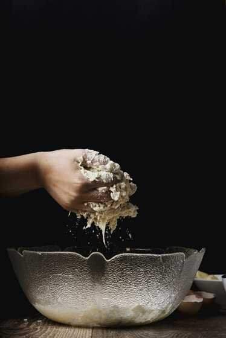
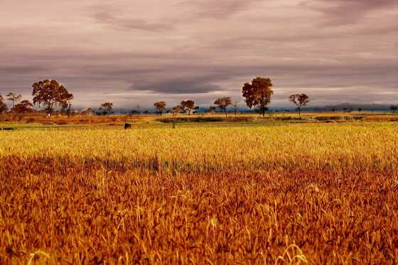
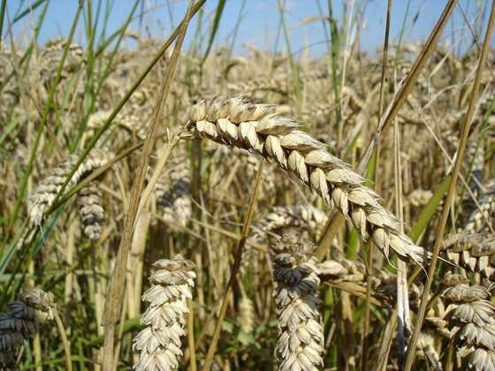

メニュー
Instagramには、パンや焼き菓子の投稿があります。内容は日によって変わる可能性があり、最新の情報はInstagramでご確認ください。
| 商品の例 | ベーグル、マフィン、ライ麦パン、トースト、クランブケーキ、ターンオーバー など(Instagram投稿より) |
|---|---|
| 価格 | 準備中 |
| 営業時間 | 準備中 |
| 定休日 | 準備中 |







写真はフリー素材のイメージです。店舗の実際の様子・商品ではありません。
口コミ
以下は制作側が作成した「イメージ例」です。実際のお客様の声ではありません。
イメージ例
ざくっとした焼き菓子と、香ばしいパンが並ぶ棚を見ているだけで楽しい気分になりました。
イメージ例
ライ麦のパンをトーストして食べました。素朴で、どこか懐かしい味です。
イメージ例
営業日をInstagramで確認してから出かけます。次はベーグルを買いたいです。
お店のこと
「R×R」は、岡山県総社市福井にあるパンと焼き菓子のお店です。Instagram(@r_retro_rice)では、その週の営業日と、パンや焼き菓子の写真が紹介されています。
店名の意味や由来、お店の理念は、確認できた情報がありません。アカウント名に「retro」「rice」とありますが、意味は分かりません。このページの「レトロな気分で」という言葉は、制作側のイメージです。
営業日や会場が週ごとに変わることがあるようです。お出かけ前にInstagramをご確認ください。
アクセス
| 住所 | 岡山県総社市福井106-1 |
|---|---|
| 電話 | 準備中 |
| 営業時間 | 準備中 |
| @r_retro_rice |